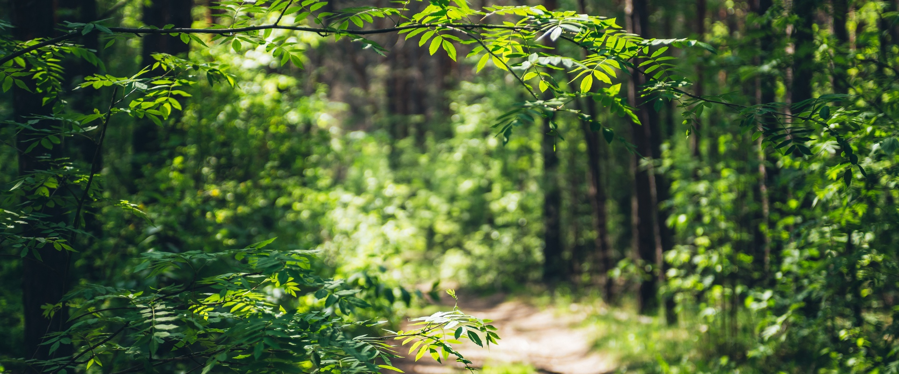

Animal Communication Science
Wavelength
Learning by Listening
Dedicated to advancing animal communication science to inform our actions and improve welfare through innovation.
01
02
03
04
05
The Challenge
We are only beginning to understand animal signals
Only a small fraction of the species that communicate have been studied. Technology is advancing faster than the research necessary to guide it.

The Opportunity
Biology, data science, creative outreach, and ecology
By integrating global datasets and advanced data science, we can transform how we listen to animal signals — grounding our work in what matters to welfare and partnering with the public in discovery.
Learn about Wavelength